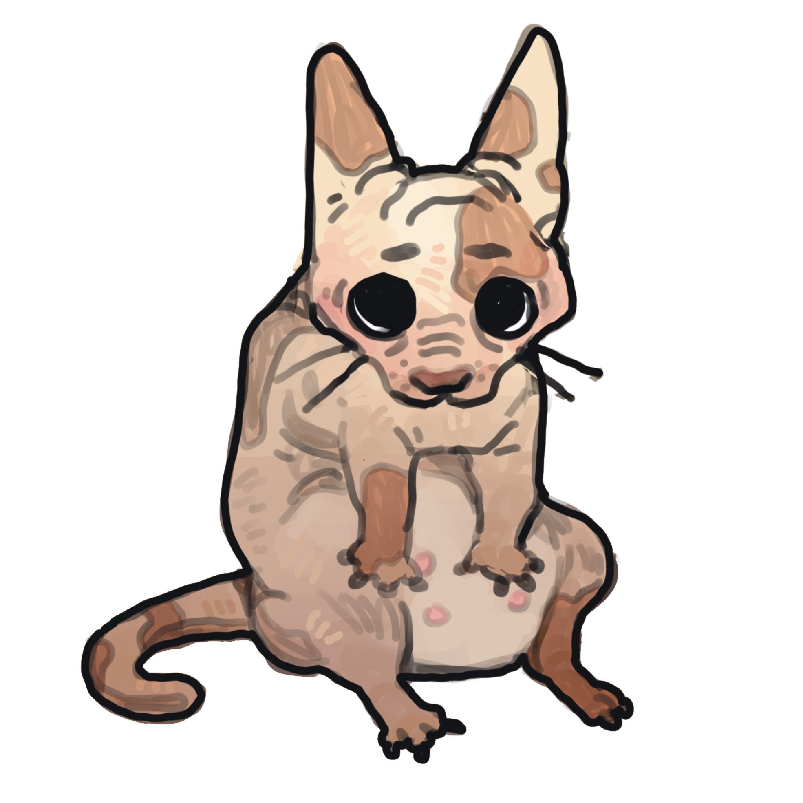
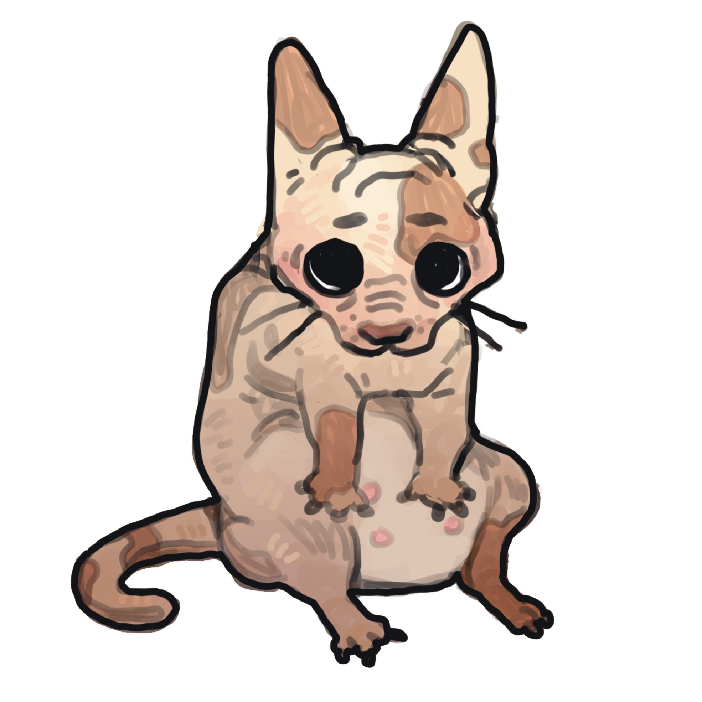

Mochisun
Artist | Developer | Mechanic
Artist | Developer | Mechanic
I have been drawing digitally since 2015 (10 years) and love to create!
Tools of the trade: iPad mini 5, Apple pencil, Procreate (Application)
Creatures, Landscapes, Portraits and Studies; I dabble in all forms of digital 2d (I even animate sometimes). Currently, I am participating in a challenge to draw at least one thing EVERY day. I post primarily on Instagram
Current Daily Drawing (DD) Counter: 390
 

I found a love for coding when I took an electrical engineering programming course in C, freshman year of college. I switched majors and never looked back!
Graduated in 2024 with a Bachelor's in Computer Science, I now code on the side while I apply to Software jobs in a tough market ( ͡° ͜ʖ ͡°)
Languages: C/C++, Java, Javascript(JS), Python, SQL, HTML5, Assembly (<-tedious)
Capabilities: Bash/Powershell Scripting, Unix Environments, Debugging, Data Structures, Ubuntu, Angular, REACT
A showcase of awesome recipes pulled from a flashdrive that my mom gifted me a while back
View on GitHubI swore in to the US Air force in 2016 (￣^￣)ゞ and began my handyman journey as an Avionics Technician on the A10 Warthog. Been in for 9 years now in the Reserves(couple years active) and recently swapped over to the F-35A in 2024. Post graduation I was lucky enough to land a job as a Product Support Engineer for ASM and have been working with the Semiconductor industry since. Turning wrenches isn't my favorite hobby, but it's great skill to have learned over time (especially when the check engine light comes on ( ⚆ _ ⚆ ))
Skills: Maintenance, Installation, LOTO electrical safety, Troubleshooting, Electrical Schematics/Wiring Diagrams
Certifications: Security Clearance, CPR, Electronics Principles


Component Knowledge (So many tools!)